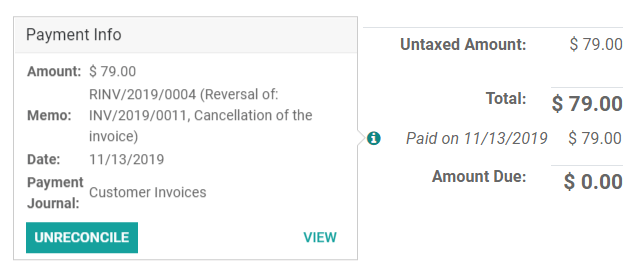
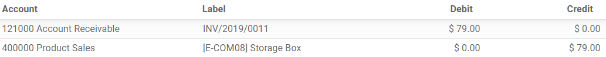
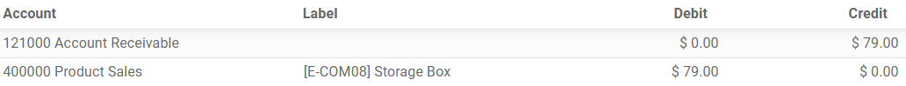

Credit notes and refunds¶
A credit/debit note, or credit/debit memo, is a document issued to a customer that notifies them that they have been credited/debited a certain amount.
Several use cases can lead to a credit note, such as:
a mistake in the invoice
a return of the goods, or a rejection of the services
the goods delivered are damaged
Debit notes are less common but are most frequently used to track debts owed by customers or to vendors because of modifications to confirmed customer invoices or vendor bills.
Note
Issuing a credit/debit note is the only legal way to cancel, refund, or modify a validated invoice. Do not forget to register the payment afterward if you need to send money back to your customer and/or validate the return if a storable product is returned.
Issue a credit note¶
You can create a credit note from scratch by going to , and by clicking on Create. Filling out a credit note form works the same way as an invoice form.
However, most of the time, credit notes are generated directly from the related invoices. To do so, go to , open the related customer invoice, and click on Add Credit Note.
You can choose between three options:
Partial Refund
Full Refund
Full refund and new draft invoice
Note
A credit note sequence starts with R and is followed by the number of the related document
(e.g., RINV/2019/0004 is related to the invoice INV/2019/0004).
Partial refund¶
When selecting the Partial Refund option, Odoo creates a draft credit note already prefilled with all the necessary information from the original invoice. This is the option to choose if you wish to do a partial refund or if you want to modify any detail of the credit note.
Note
This is the only option for invoices marked as in payment or paid.
Full refund¶
When selecting the Full Refund option, Odoo creates a credit note, automatically validates it, and reconciles it with the related invoice.
This is the option to choose for a full refund or to cancel a validated invoice.
Full refund and new draft invoice¶
When selecting the Full refund and new draft invoice option, Odoo creates a credit note, automatically validates it, reconciles it with the related invoice, and opens a new draft invoice prefilled with the same details from the original invoice.
This is the option to modify the content of a validated invoice.
Issue a debit note¶
You can create a debit note from scratch by going to or by clicking on the related invoice you wish to issue a debit note for. On the invoice form view, click Add debit note, fill in the information, and click Create.
Record a vendor refund¶
Vendor refunds are recorded the same way as credit notes:
You can either create a credit note from scratch by going to , and by clicking on Create; or by opening the related vendor bill, and clicking on Add Credit Note.
Record a debit note¶
Debit notes from vendors are recorded in a similar way to how they are issued to customers:
Go to , open the related bill you wish to record a debit note for, and click Add debit note. Fill in the information, and click Create debit note.
Journal entries¶
Issuing a credit/debit note from an invoice/bill creates a reverse entry that zeroes out the journal items generated by the original invoice.
Example
The journal invoice of an entry:
And here is the credit note’s journal entry generated to reverse the original invoice above:
